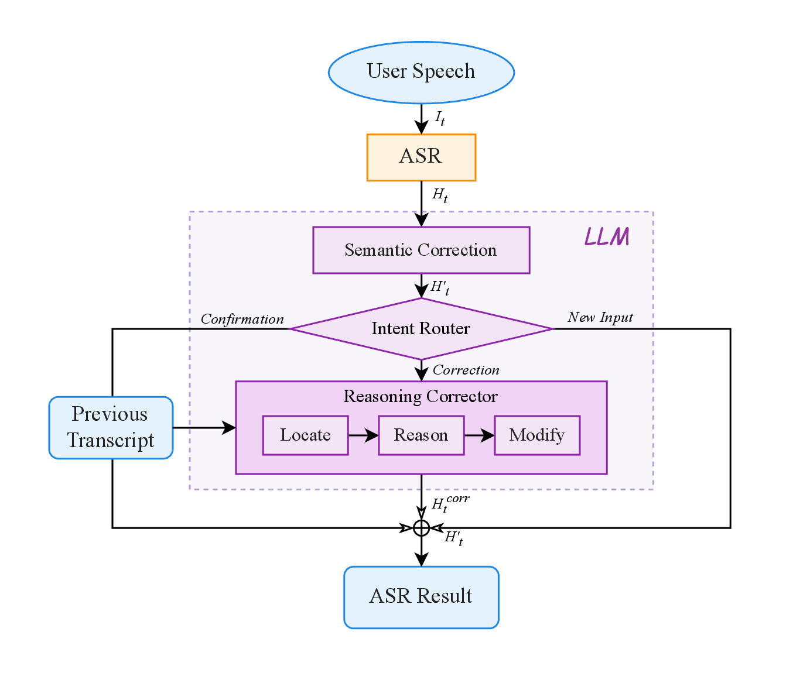
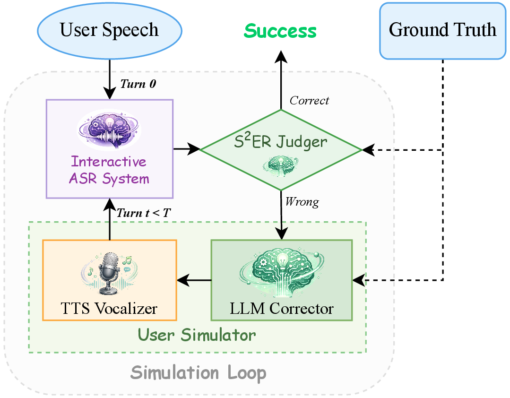
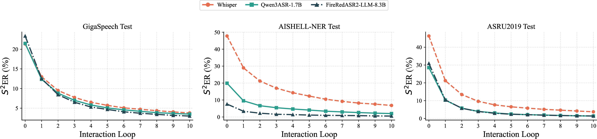

Automatic speech recognition (ASR) is a core component of human-computer interaction and an increasingly important front-end for LLM-based assistants and agents. However, most current ASR systems still follow a single-pass paradigm, which is poorly aligned with human communication, where misunderstandings are resolved through iterative clarification and refinement. This mismatch makes it difficult to correct meaning-critical errors once they occur. Meanwhile, token-level metrics such as WER or CER cannot adequately reflect such a problem. To address these limitations, we formulate Interactive ASR as a multi-turn refinement task and propose Agentic ASR, a closed-loop framework that combines a single-pass ASR front-end with semantic correction, intent routing, and reasoning-based editing. We further introduce the Sentence-level Semantic Error Rate (S2ER), an LLM-based semantic evaluation metric, together with an Interactive Simulation System for scalable and reproducible benchmarking. Experiments on multilingual, named-entity-intensive, and code-switching benchmarks show that iterative interaction consistently reduces semantic errors, with much larger gains in S2ER than in conventional token-level metrics. Human-AI alignment and ablation studies further validate the reliability of the semantic judge and the robustness of the proposed framework.

Agentic ASR

Interactive Simulation System
| Category | Benchmark | Loop 0 | Loop 1 | Loop 3 | Loop 10 |
|---|---|---|---|---|---|
| Multilingual | GigaSpeech Test | 21.47% | 12.35% | 7.00% | 3.49% |
| Multilingual | WenetSpeech Test_Net | 19.46% | 8.69% | 4.15% | 1.80% |
| Name Entity | AISHELL-NER Dev† | 17.38% | 8.45% | 4.45% | 1.97% |
| Name Entity | AISHELL-NER Test† | 19.91% | 9.55% | 5.47% | 2.02% |
| Code Switching | CS-Dialogue Test† | 19.73% | 10.83% | 6.58% | 4.16% |
| Code Switching | ASRU2019 Test | 28.57% | 10.32% | 3.98% | 1.36% |

Different Base ASR Model Ablation
@misc{wang2026interactiveasrhumanlikeinteraction,
title={Interactive ASR: Towards Human-Like Interaction and Semantic Coherence Evaluation for Agentic Speech Recognition},
author={Peng Wang and Yanqiao Zhu and Zixuan Jiang and Qinyuan Chen and Xingjian Zhao and Xipeng Qiu and Wupeng Wang and Zhifu Gao and Xiangang Li and Kai Yu and Xie Chen},
year={2026},
eprint={2604.09121},
archivePrefix={arXiv},
primaryClass={cs.CL},
url={https://arxiv.org/abs/2604.09121},
}